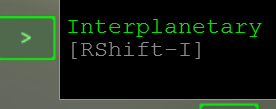
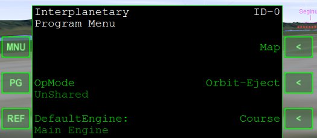
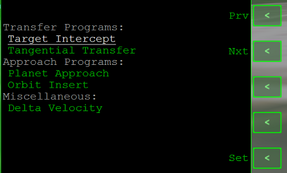
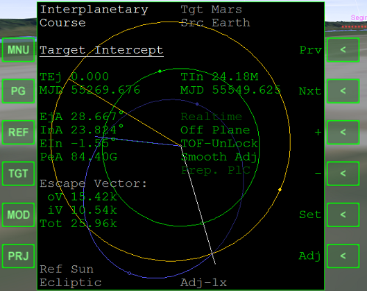
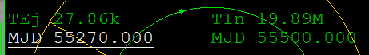
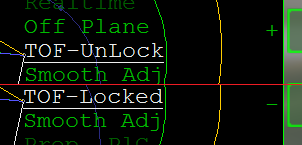
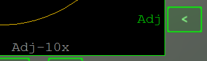
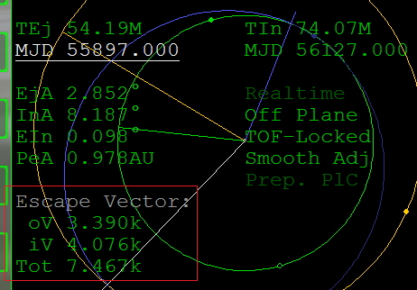

IMFD Part1 Target Interceptとプランの作成
Part1では、地球から火星までのフライトを通じて、IMFDの基本的な操作について解説します。
使用するシナリオは、ChecklistsフォルダのQuickstartです。
筆者からのお願い
IMFDを導入する前に、必ずOrbiterチュートリアルに目を通しておいてください。
チュートリアルの内容を理解していない場合、IMFDについて質問をいただいても回答できないことがあります。
Target Interceptを開く
ゲームを起動したら、左MFDでIMFD(Interplanetary)を開く。

MNUをクリックしてProgram Menuを開く。

Courseをクリックすると、プログラムの選択画面になる。
右側のPrv or Nxtをクリックすると、選択するプログラムを変更できる。
SetをクリックしてTarget Interceptを選択する。

ターゲットの選択・日時の設定
TGTをクリックして、Marsと入力する。
これで火星がターゲットとして選択される。

Nxtを何度かクリックして、左側のMJDを選択する。
左が出発時刻(TEj)、右が到着時刻(TIn)となっている。
TEjとTInは、その下のMJDと連動している。

| TEj | Time to Eject |
| TIn | Time to Intercept |
Setをクリックして、55270と入力してEnterキーを押す。
ふたたびNxtをクリックして、右側のMJDを選択する。
55500と入力する。
これは出発時刻(MJD 55270)の230日後になる。
効率のよい軌道を探す
ふたたびNxtを何度かクリックして、TOF-UnLock※を選択する。
+をクリックして、TOF-Lockedにする。

※TOF= Time of Flight = 飛行時間
これで、飛行時間が230日で固定される。
Prvを何度かクリックして、ふたたび左側のMJDを選択する。
右下のAdjをクリックして、Adj-10xにする。
Adjをクリックすることで、一度に変化する量を変えることができる。

+を左クリックで長押しすると、軌道が変化する。
左下のEscape Vectorには、必要なDelta Vが表示されている。

| oV | 出発に必要なDelta V |
| iV | ランデブーに必要なDelta V |
| Tot | 合計(Total) |
基本的には、Totができるだけ小さくなるように操作する。
Adjをクリックして、Adj-1xにする。
これ以上効率のよい軌道がないか確認する。
これが、「地球離脱から火星到着まで230日」という条件のもとで、現在時刻から一番近い、効率のよい軌道ということになる。
ふたたびTOF-Lockedを選択して、TOF-UnLockに戻しておく。
任意の飛行時間を設定する
かりに、出発から180日で到着したい場合は、左のMJDに180を足した値を右のMJDに入力して、上記の手順を実行する。
UMMUに対応した機体の場合、酸素が尽きる前に目的地に着く必要があります。
IMFDを使えば、このような時間制限のあるミッションでも対応しやすくなります。
史実ミッションの再現
IMFDを使えば、出発時刻と到着時刻を指定してフライトプランを作ることが可能です。
実際のそれと同じ出発時刻・到着時刻を入力することで、史実にかなり近いスケジュールでミッションを再現することもできます。
この場合は、TOF-Lockedにする必要はありません。
MJDを西暦に変換する方法については以下の記事を参照してください。
軌道要素と時刻系 - Orbiter Date Converter
軌道要素と時刻系 - Modified Julian Date [MJD]